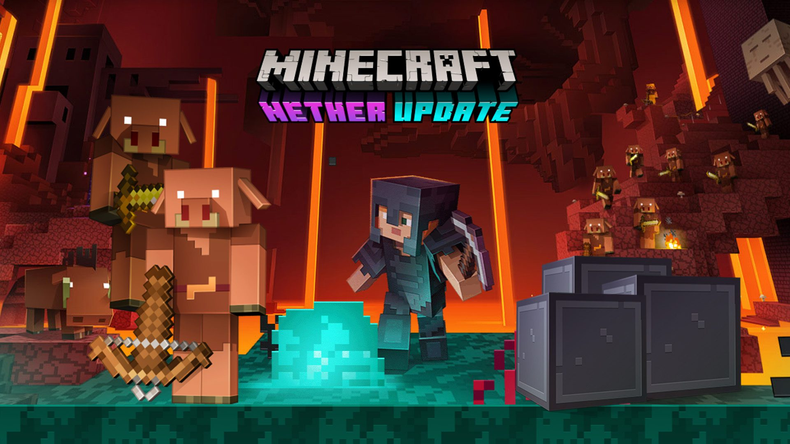

Actualizaciones Recientes
Actualización
Minecraft 1.20 - Trails & Tales:
Esta actualización añade nuevas variantes de bambú, incluyendo mosaicos y tablones, así como un sensor de sculk calibrado. También introduce estanterías cinceladas, camellos y una herramienta de brocha. En cuanto a la generación de mundo, presenta un bioma de árboles de cerezo y geodas de amatista. Además, incluye un sistema de arqueología y nuevos sets de bambú, junto con un sistema de armaduras mejorado.
Actualización
Minecraft 1.17 - Caves & Cliffs: Part I:
Esta actualización se enfocó en mejorar la generación del mundo, especialmente en las cuevas y montañas. Introdujo nuevas características como las cuevas más grandes y detalladas, así como la generación de montañas más realista. También agregó nuevos bloques y elementos como el cobre y la geoda de amatista.
Actualización
Minecraft 1.16 - Nether Update:
Esta actualización revisó por completo el Nether, introduciendo nuevos biomas, criaturas y características de juego. Agregó biomas como los bosques carmesí y los deltas de almas, así como nuevas criaturas como los piglins y los hoglins. También incluyó nuevos bloques y elementos, como el mineral de oro del Nether y las hogueras.

Actualización
Minecraft 1.13 - The Aquatic Update:
Esta actualización se centró en expandir y mejorar las características acuáticas del juego. Introdujo nuevos biomas acuáticos, como los arrecifes de coral y los bosques de algas, así como nuevas criaturas marinas como los delfines y los peces tropicales. También incluyó nuevos elementos y mecánicas relacionadas con el agua, como el tridente y la mecánica de natación.
Actualización
Minecraft 1.9 - The Combat Update:
Esta actualización revolucionó el sistema de combate en Minecraft, introduciendo nuevos elementos como ataques con mano izquierda, habilidades especiales de combate, y un nuevo sistema de medición de daño basado en ataques cronometrados. También agregó nuevas criaturas como los guardianes y los caballos.
Actualización
Minecraft 1.8 - The Bountiful Update:
Esta actualización se centró en agregar una variedad de nuevos bloques, elementos y mecánicas de juego. Introdujo características como la generación de aldeas mejorada, nuevos tipos de bloques como prismarina y bloques de esponja, así como nuevas criaturas como el conejo.
Actualización
Minecraft 1.7.10 - The Update that Changed the World, Esta actualización incluyó una serie de cambios significativos en la generación del mundo, introduciendo nuevos biomas, estructuras y características de juego. También agregó nuevas mecánicas de juego como el sistema de generación de mundo ampliado y la posibilidad de personalizar la generación del mundo mediante la creación de mundos personalizados.